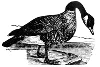
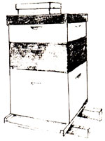

Issue # 99 - May/June 1986
The National Alliance of Homebased Businesswomen (NAHB) has developed a model zoning ordinance for home businesses. The model is designed to allow home businesses the same privileges as other businesses while protecting the residential character of a neighborhood. Send $2.00 to NAHB, P.O. Box 306, Midland Park, NJ 07432, for a copy of the ordinance.
The Committee on Nationwide Television Audience Measurement has noted an increase in the percentage of American households without a television. The number of telly-less homes increased from 2.9% in 1982 to 4.3% today.
According to a recent issue of Science News , an EPA-funded study indicates that "there is a link between exposure to poisonous doses of agricultural pesticides known as organophosphates and a number of neuropsychological problems, including depression, irritability, and difficulty in thinking, memory, and communication." Organophosphates have been widely used for decades; a particularly toxic oneparathionis thought to be responsible for half of all pesticide poisonings in the world today.
Despite the poisonings-of both humans and the environment-pesticide use is often promoted by aid agencies and governments of developing countries that provide chemical subsidies to farmers. A study by the World Resources Institute has found that hundreds of millions of dollars are spent annually to subsidize the sale of pesticides to growers in developing nations. When the cost of using the dangerous chemicals is heavily discounted, farmers choose them over more laborintensive, but environmentally safer, methods of pest control.
There is an increasing awareness of the harm caused by environmentally detrimental "aid" to developing countries. Legislation passed late in 1985 requires U.S. representatives to the World Bank and three other development banks to work for environmental reforms in the banks' lending policies. Science News magazine reports that the U.S. executive directors of these banks must now actively promote such practices as "the hiring of more professionally trained staf to identify potential ecological impacts of projects up for funding, the involvement of conservation groups and native-peoples' organizations in the planning of environmentally sensitive projects, and more funding of `environmentally beneficial' projects such as agroforestry, integrated pest management, and rural solar energy systems."
Circumcision Services, Inc. has opened a clinic in Hous ton for the sole purpose of circumsizing male infants. Special Delivery (a newsletter of Informed Homebirth, Inc. and Informed Birth and Parenting, Inc.) reports that the clinic is advertised in a brochure distributed by the American College of Obstetricians and Gynecologists in a gift pack given to new mothers. How interesting. In a 1978 statement of policy, the ACOG supported the American Academy of Pediatricians' position that "there is no absolute medical indication for routine circumcision of the newborn."
The Chippewa have voted to ban the use of lead shot by tribal members hunting waterfowl during their ofreservation treaty hunts in northern Wisconsin. Lead pellets lying on shallow lake and river bottoms are picked up by feeding ducks, geese, and other waterfowl and cause lead poisoning. The U.S. Fish and Wildlife Service estimates that two to three million ducks in this country die from the effects of lead each year. Eagles and other scavenger birds are also poisoned when they feed on the lead-contaminated waterfowl.
Tired of the decades-long debate over the use of lead shot, the Chippewa have decided to "lead the way in achieving a nontoxic method for hunting waterfowl." (A detailed article about this problem, and a comparison of lead and steel shot, can be found in MOTHER NO. 79.)
The Environmental Task Force has initiated Community Environmental Legal Services (CELS), a national publicinterest law firm that will provide free legal assistance to grass roots groups and concerned citizens. If you need legal support for an environmental problem in your community, write to CELS, 1012 14th St. N.W., 15th Floor, Washington, DC 20005, or call 202/822-6800.
Some wood preservatives, when used on beehives, decrease bees' survival rates and contaminate the honey and beeswax. But scientists with the USDA now consider three preservatives-copper napthenate, acid copper chromate, and copper-9-quinolinolate-safe for use on beehives. Pentachlorophenol (PCP), chromated copper arsenate (CCA), and tributyl tin oxide (TBTO) are not safe for hive use. One USDA entomologist says wood preservatives can extend the useful life of a hive to 20 years or longer, but he cautions that "all wood preservatives are pesticides and should be used judiciously."
|
|
 |
 |